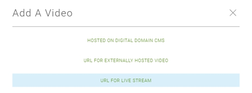

Publishing a Live Stream
The Content Console offers a flexible video publishing platform where you can tailor your configuration workflow based on your requirements and availability of your video digital assets.
The following tutorial illustrates how to publish a live stream that is hosted on an external streaming Media Server or Content Delivery Network (CDN).
PART 1 - COMPLETE PREREQUISITES
- Review Video Publishing Requirements
- Define a Video Property
- Define a Video Collection
PART 2: CREATE LIVE STREAM PROFILE
This section shows you how to publish a hosted video. You will:
- Set the property and collection the hosted video is contained in.
- Configure video settings (i.e., visibility, downloading, sharing, projection, and blind spot).
- Define video metadata (i.e., title, headiline, description, tags).
- Upload a video.
- Review / update final configuration.
- Publish video.
Step 1: Select Video Upload Method
- In Home > Properties > Property Name > Collection.
- In the collection select Upload Video (+Upload Video).
- On the Uploader screen, select URL FOR LIVE STREAM.

Step 2: Define Video Metadata
Metadata is used to uniquely identify the characteristics of each video.
- Videos can be tagged with metadata including Title, Description, Pre Stream Text, and Post Stream Text.
- The default language for metadata is English.
- A Consumer will see the metadata on websites where a video is posted.
- A Publisher can search for metadata in the Content Console.
Title (Required)
- Effective titles summarize the video subject.
- They typically contain 5 words are less.
- Use descriptive keywords that grab a viewers attention.
- Should make sense out of context when they appear in search research.
Description
- Effective descriptions are concise (e.g., a small paragraph or lead-in sentence with bullet points).
- Should include exciting descriptions about video topic that will attract viewers attention.
- Should include hashtags (#) so they can be easily promoted on social media site.
- Should include credits associated with video creator, participants, actors, promoters, etc.
Pre Screen Text
- Enter introductory content for your video.
Post Screen Text
- Enter text that will display after a video has finished playing (e.g., Thanks for watching, Visit our website, etc.)
Step 3: Select Property and Collection
Change the default property assigned to your video and group your video in a collection. Note that both steps are required.
- In Assign to a property section, the currently assigned property is selected. To reassign the current video to a new property, select it from the drop-down.
- After you select the property, the Assign to a collection" drop-down displays and presents a list of collections associated with the current property. Select a collection to assign to the video.
Step 3: Set Stream Projection
Indicate what type of video you will be uploading.
- Flat - This mode supports Monoscopic 360° videos. This video type is typically filmed with a single camera and stitched together to form a single equirectangular video.
- Spherical _ This video type is usually filmed using two or more cameras and supports the use of HMD devices. Characteristics include:
- Uses stereoscopic technique to render images so there is a slight offset between your left and right eye.
- This view creates and impression of depth a full 360 experience.
To set video projection:
- Go to Video Projection?.
- Select a radio button to set video projection (i.e., Spherical or Flat).
Step 4: Specify Stream Settings
The upload video process involves specifying a services of stream URLs for your live stream.
- Supported video formats include MP4 HD (1040p), MP4 (2K), and MP4 (4K).
- Supported audio compression and encoding scheme is Advanced Audio Coding (AAC)
- See Video Publishing Requirements for prerequisite steps and video and audio requirements.
To specify stream URLs:
- Go to the Stream Settings section.
- Specify the following stream URL types:
| Stream URL Type | Description |
|---|---|
| Stream Origin URL | Input the publishing point URL where the live stream is originally hosted. |
| Stream Return URL | Input the redirection URL to that the viewer will return to after the live-stream |
| concludes. | |
| Stream Share URL | Input the meta URL that will upload when a video is shared on an external site. This option is applicable if "Can users share your video?" is set to Yes. |
| Stream Meta URL | Input the meta URL that will upload when a video is shared on an external site. This option is applicable if "Can users share your video?" is set to Yes. |
Step 2: Configure Video Security
Throughout the publishing cycle, your videos will require different levels of security for access, downloading, and sharing to social networks. Video access levels include:
- Private - Video can be accessed by the console user who uploaded it.
- Internal - Video can be accessed by the console administrator and designated console users.
- Public - Video is visible to external consumers and can be accessed by console administrator and designated console users.
- The default setting is Private.
As a best practice, set your video to private for the initial upload. You will need to add key art and set the broadcast time in post upload activities.
To configure video security:
- Go to the Who can see your video? section.
- Select a radio button to set the access level.
Step 3: Set Stream Projection
Indicate what type of video you will be uploading.
- Flat - This mode supports Monoscopic 360° videos. This video type is typically filmed with a single camera and stitched together to form a single equirectangular video.
- Spherical _ This video type is usually filmed using two or more cameras and supports the use of HMD devices. Characteristics include:
- Uses stereoscopic technique to render images so there is a slight offset between your left and right eye.
- This view creates and impression of depth a full 360 experience.
To set video projection:
- Go to Video Projection?.
- Select a radio button to set video projection (i.e., Spherical or Flat).
To set video projection:
- Go to Video Category Type.
- From the drop-down select a category.
Step 4: Set Start Time and Duration
The time you set your video to broadcast is based on many factors. For example:
- You arrangements with web providers to post your video at a designated time.
- You have considerations relating to the geographical area / time zone where your video will be initially broadcast.
- You may be sequencing the premiere of a video based on an event or product launch, etc.
- If your video security is set to Private or Internal, set your video to "Public" in the Video Information > Who can see your video? section prior to the Broadcast time.
To set video start time and duration:
- Go to Settings > Start.
- Select the down arrow to load the calendar popup, then set the date and time the video will broadcast.
- In Duration (In Minutes) specify a number that indicates estimated maximum live stream play time in minutes (e.g., 60 for 60 minutes).
- If you are ready to publish the video, select Review to continue, or Save for Later to commit your changes and resume publishing this video at a later time. Your video will display in the Production Area on the Home. page.
- Make sure your video is set to "Public" in the Who can see your video? before the broadcast time.
Part 4: Review, Test, and Publish Video
Step 1: Review Video Details
The Video Details section allows you to review the current settings assigned to the video. You can also test / play the video in the Content Console, or use the embed a video link to test the video.
| Option / Setting | Description |
|---|---|
| Views | Displays the number of video views |
| Uploaded | Displays the date and time video was uploaded |
| Visibility Settings | Displays the current visibility setting for the video (Private, Internal, Public) |
| Allow Downloads | Displays video download setting Yes/No |
| Allow Sharing | Displays video sharing setting Yes/No |
| Allow Comments | Displays video comments setting Yes/No |
| File Size | Displays video file size |
| Duration | Display video play time |
| Embed Link | Displays video player and embed link. |
| Users | Displays number of users in each role that has access to your video (Admins, Content Managers, Viewers) |
| To view video details: |
- Go to Home > Properties > Collection > Video.
- Select Video Details.
- Review the video information. You can test the video by playing it, or using the embed video link.
- To update video settings, go to the Edit section.
Step 2: Review Video
The Review Video Profile page displays a final presentation of your video configuration.
- Review the content for accuracy.
- Verify that it represents the message and style you want to present.
- Verify that the image URL presented launch to the correct page and work properly.
- Verify that all referenced websites are correct.
- Select the edit icon to make any adjustments.
Step 3: Publish Video
- If you are happy with the video configuration, click Publish.
- Your video will go live on all the sites posted based on your designated Broadcast Time.